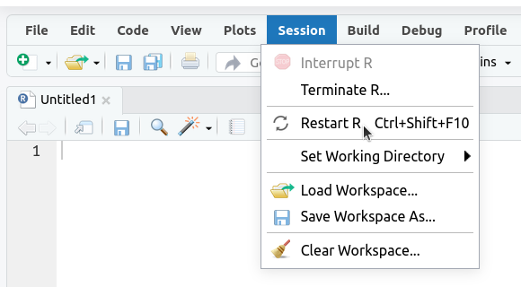
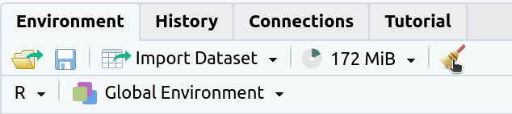
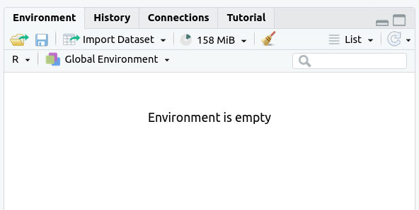
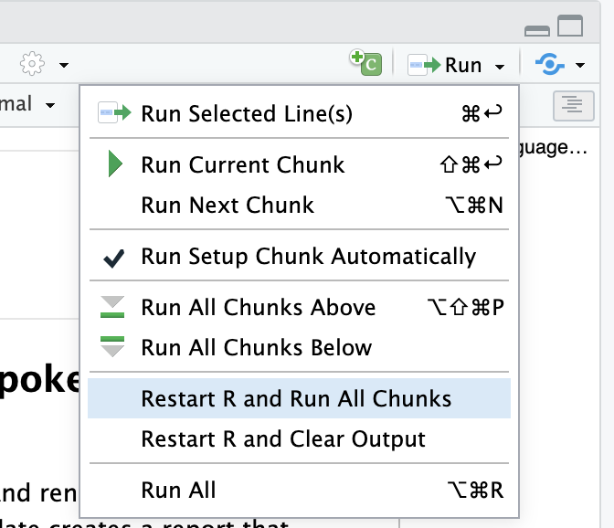

acacia <- read_tsv("ACACIA_DREPANOLOBIUM_SURVEY.txt", na = c("", "dead"))Week 5 Assignment
Week 5 Assignment
Purpose
The goal of this assignment is to make plots using ggplot2 and some review of dplyr and readr functions.
Task
Write R code to successfully answer each question below.
Criteria for Success
- Code is within the provided code chunks or new code chunks are created where necessary
- Code chunks run without errors
- Code chunks have brief comments indicating which code is answering which part of the question
- Code will be assessed as follows:
- Produces the correct answer using the requested approach: 100%
- Generally uses the right approach, but a minor mistake results in an incorrect answer: 90%
- Attempts to solve the problem and makes some progress using the core concept, but returns the wrong answer and does not demonstrate comfort with the core concept: 50%
- Answer demonstrates a lack of understanding of the core concept: 0%
- Any questions requiring written answers are answered with sufficient detail
Assignment Exercises
Set-up
Load the packages we will need. You can either load all of them individually (readr, dplyr, ggplot2) or load the tidyverse package.
1. Acacia and Ants (20 pts)
Read in the acacia data frame by running the following code chunk.
- Make a scatter plot with
CIRCon the x axis andAXIS1(the maximum canopy width) on the y axis. Label the x axis “Circumference” and the y axis “Canopy Diameter”. - The same plot as (a), but with both axes scaled logarithmically (using
scale_x_log10andscale_y_log10). - The same plot as (a), but with points colored based on the
ANTcolumn (the species of ant symbiont living with the acacia) - The same plot as (c), but instead of different colors show different species of ant (values of
ANT) each in a separate subplot. - The same plot as (d) but add a simple model of the data by adding
geom_smooth.
2. Mass vs. Metabolism (20 pts)
The relationship between the body size of an organism and its metabolic rate is one of the most well studied and still most controversial areas of organismal physiology. We want to graph this relationship in the Artiodactyla using a subset of data from a large compilation of body size data (Savage et al. 2004). Run this code chunk to get started.
# create a data frame with 3 columns: body_mass, metabolic_rate, and family
size_mr_data <- data.frame(
body_mass = c(32000, 37800, 347000, 4200, 196500, 100000,
4290, 32000, 65000, 69125, 9600, 133300, 150000, 407000,
115000, 67000,325000, 21500, 58588, 65320, 85000, 135000,
20500, 1613, 1618),
metabolic_rate = c(49.984, 51.981, 306.770, 10.075, 230.073,
148.949, 11.966, 46.414, 123.287, 106.663, 20.619, 180.150,
200.830, 224.779, 148.940, 112.430, 286.847, 46.347,
142.863, 106.670, 119.660, 104.150, 33.165, 4.900, 4.865),
family = c("Antilocapridae", "Antilocapridae", "Bovidae",
"Bovidae", "Bovidae", "Bovidae", "Bovidae", "Bovidae",
"Bovidae", "Bovidae", "Bovidae", "Bovidae", "Bovidae",
"Camelidae", "Camelidae", "Canidae", "Cervidae",
"Cervidae", "Cervidae", "Cervidae", "Cervidae", "Suidae",
"Tayassuidae", "Tragulidae", "Tragulidae"))Make the following plots with appropriate axis labels:
- A plot of body mass vs. metabolic rate
- A plot of body mass vs. metabolic rate, with log10 scaled axes (this stretches the axis, but keeps the numbers on the original scale), and the point size set to 3.
- The same plot as (b), but with the different families indicated using color.
- The same plot as (b), but with the different families each in their own subplot.
3. Acacia and Ants Histograms (20 pts)
In this exercise, we will be making a number of different histograms with the acacia dataset.
- Make a bar plot of the number of acacia with each mutualist ant species (using the
ANTcolumn). - Make a histogram of the height of acacia (using the
HEIGHTcolumn). Label the x axis “Height (m)” and the y axis “Number of Acacia”. - Make a plot that shows histograms of both
AXIS1andAXIS2. Due to the way the data are structured, you’ll need to add a 2nd geom_histogram() layer that specifies a new aesthetic.
To make it possible to see both sets of bars you’ll need to make them transparent with the optional argumentalpha = 0.3. Set the color forAXIS1to “red” andAXIS2to “black” using thefillargument. Label the x axis “Canopy Diameter (m)” and the y axis “Number of Acacia”. - Use
facet_wrap()to make the same plot as (c) but with one subplot for each treatment. Set the number of bins in the histogram to 10.
4. Acacia and Ants Data Manipulation (20 pts)
Run the following line of code to use read_tsv from the readr package to read in the data from “TREE.txt”. This line of code is using the col_types argument to specify the the HEIGHT and AXIS_2 columns should have their data read is as the data class “double,” which is like “numeric.”
The code might spit out a “warning”, but everything should work fine (you’ll see the trees object in your environment).
# you can ignore the "warning"
trees <- read_tsv("TREE.txt",
col_types = list(HEIGHT = col_double(),
AXIS_2 = col_double())) |> drop_na(TREATMENT)Now that you have the trees data frame, do the following:
- Update the
treesdata frame with a new column namedcanopy_areathat contains the estimated canopy area calculated as the value in theAXIS_1column times the value in theAXIS_2column. - Show output of the
treesdata frame with just theSURVEY,YEAR,SITE, andcanopy_areacolumns (do not overwrite thetreesobject, though). - Make a scatter plot with
canopy_areaon the x axis andHEIGHTon the y axis. Color the points byTREATMENTand plot the points for each value in theSPECIEScolumn in a separate subplot. Label the x axis “Canopy Area (m)” and the y axis “Height (m)”. Make the point size 2. - That’s a big outlier in the plot from (c). 50 by 50 meters is a little too big for a real Acacia, so filter the data to remove any values for
AXIS_1andAXIS_2that are over 20 and update the data frame. Then remake the graph. - Using the data without the outlier (i.e., the data generated in (d)), find out how the abundance of each species has been changing through time. Use
group_by,summarize, andnto make a data frame withYEAR,SPECIES, and anabundancecolumn that has the number of individuals in each species in each year. Print out this data frame. - Using the data frame generated in (e), make a line plot with points (by using
geom_linein addition togeom_point) withYEARon the x axis andabundanceon the y axis with one subplot per species. To let you seen each trend clearly let the scale for the y axis vary among plots by addingscales = "free_y"as an optional argument tofacet_wrap.
5. Adult vs. Newborn Size (20 pts)
Larger organisms have larger offspring. We want to explore the form of this relationship in mammals.
First, read in the data frame with the code below and take a look at the dataframe. Do you see any issues that need to be addressed?
# download the file
download.file("https://esapubs.org/archive/ecol/E084/093/Mammal_lifehistories_v2.txt",
"Mammal_lifehistories_v2.txt")
# read the file
read_tsv("Mammal_lifehistories_v2.txt")The code below will read in the dataset and save it as the object mammal_histories. You should recognize the na argument in the read_tsv() function; this will handle our -999 values and convert them to NAs. This code also uses a handy function called rename from the tidyverse to rename columns, removing any special characters.
mammal_histories <- read_tsv("Mammal_lifehistories_v2.txt",
na = c("-999", "-999.00")) %>%
rename(mass_g = `mass(g)`,
gestation_mo = `gestation(mo)`,
newborn_g = `newborn(g)`,
weaning_mo = `weaning(mo)`,
wean_mass_g = `wean mass(g)`,
AFR_mo = `AFR(mo)`,
max_life_mo = `max. life(mo)`,
litter_size = `litter size`,
litters_per_year = `litters/year`)
mammal_histories- Graph adult mass vs. newborn mass. Label the axes with clearer labels than the column names.
- It looks like there’s a regular pattern here, but it’s definitely not linear. Let’s see if log-transformation straightens it out. Graph adult mass vs. newborn mass, with both axes scaled logarithmically. Label the axes.
- This looks like a pretty regular pattern, so you wonder if it varies among different groups. Graph adult mass vs. newborn mass, with both axes scaled logarithmically, and the data points colored by order. Label the axes.
- Coloring the points was useful, but there are a lot of points and it’s kind of hard to see what’s going on with all of the orders. Use
facet_wrapto create a subplot for each order. - Now let’s visualize the relationships between the variables using a simple linear model. Create a new graph like your faceted plot, but using
geom_smoothto fit a linear model to each order. You can do this using the optional argumentmethod = "lm"ingeom_smooth.
6. Check That Your Code Runs
Sometimes we think our code runs, but it only actually works because of something else we did previously.
To make sure it actually runs, you should save your work and then run it in a clean (read: empty) environment.
I have actually be forcing the issue by having you “knit” your file before submitting it. To successfully knit, every RMarkdown file must be “self-contained,” meaning every line of code that is necessary to run anything in the .Rmd file must be written in the .Rmd file. The file doesn’t recognize things already in the environment.
For example, if you use a function from the readr package (e.g., read_csv) anywhere in your .Rmd file, you will need to have library(readr) in a code chunk in your .Rmd file before any line with read_csv.
Similarly, if you have a line of code referencing an object (like a data frame), you need to have a line of code beforehand in your .Rmd file that creates the object.
While attempting to knit a document is one way to learn if your code actually runs the way you think it should, there are other (and maybe better) ways to test this out before you ever try to knit a document.
Follow these steps in RStudio to make sure your code really runs:
- Restart R by clicking
Sessionin the menu bar and selectingRestart R.

- If the
Environmenttab isn’t empty, click on the broom icon to clear it.

The Envirnment tab should now say “Environment is empty.”

- Run all of the code you have written in your assignment so far by selecting
Restart R and Run All Chunks,Run All, or using the keyboard shortcut (Ctrl+Alt+RorCmd+Opt+R)

If your code does not run all the way through, check the error messages. This will help you isolate the potential issue.
No need to type any answers here. If you are able to submit a PDF, you’re good to go.
7. Graphing Data from Multiple Tables (Optional)
This questions uses the acacia and trees data frames.
We want to compare the circumference to height relationship in acacia on different treatments in the context of the same relationship for trees in the region.
Make a graph with the relationship between CIRC and HEIGHT for the trees as gray points in the background and the same relationship for acacia as red points plotted on top of the tree points.
There should be one subplot for each treatment. Scale the both axes logarithmically. Include linear models for both sets of data. Provide clear labels for the axes. Add a theme.